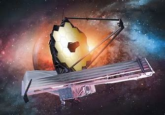

What is the James Webb Space Telescope?
The James Webb Space Telescope (JWST) is a large, space-based observatory designed to explore the universe in unprecedented detail. It is often referred to as the successor to the Hubble Space Telescope, but with advanced capabilities.
Key Features
- Infrared Observations: JWST is equipped to observe the universe in infrared light, allowing it to see through dust clouds and study the early universe.
- Large Mirror: Its primary mirror measures 6.5 meters in diameter, enabling it to collect more light than Hubble.
- Sunshield: JWST has a large sunshield that protects it from the Sun's heat and keeps its instruments cool.
Contributions to Astronomy
JWST is designed to help answer fundamental questions about the origins of stars, galaxies, and planetary systems. It will provide critical data on:
- The formation of stars and planets.
- The composition of exoplanet atmospheres.
- The evolution of galaxies over cosmic time.
Partnerships
The James Webb Space Telescope is a collaborative project among three major space agencies:
- NASA: The primary agency responsible for the design and construction of JWST.
- European Space Agency (ESA): Provides the launch vehicle and contributes scientific instruments.
- Canadian Space Agency (CSA): Contributes to scientific instruments and technology development.